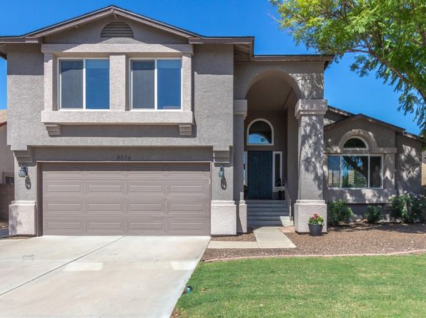
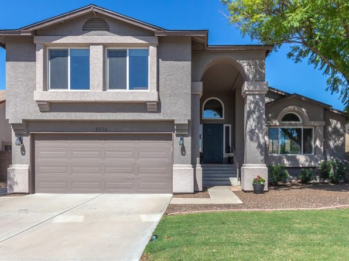

Moving to a new area can be overwhelming but with this brochure it can help you find the best place to live in Arizona. When your'e looking for specific things that factor in what you're looking for such as living costs, amenities that make your new home or even climate rather youd like it cold to burning hot and etc. Peoria is definitleythe place your'e lookingfor although every area has its perks Peoria especially can provide everything your'e lookin for. Peoria is a suburb of Phoenix with a population of 161,383. Peoria is in Maricopa County and is one of the best places to live in Arizona. Living in Peoria offers residents a dense suburban feel and most residents own their homes. In Peoria there are a lot of parks. Many families and young professionals live in Peoria and residents tend to lean conservative. The public schools in Peoria are above average.
 
